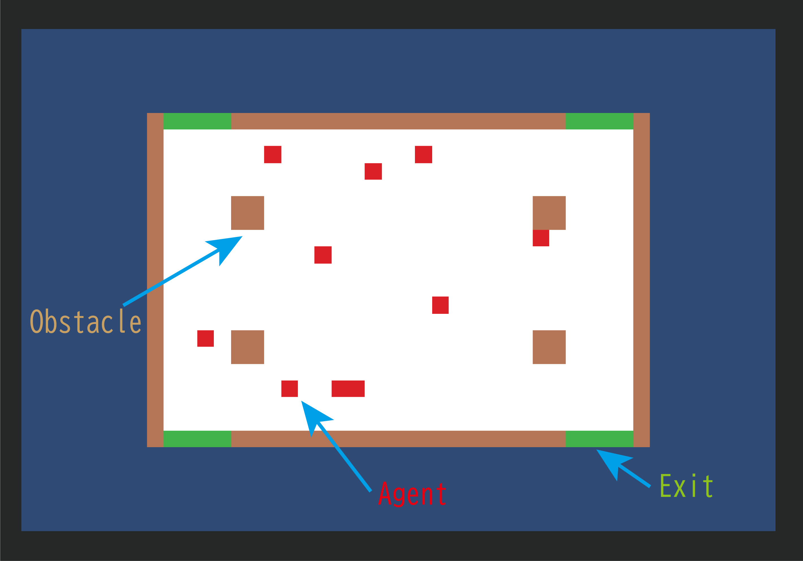
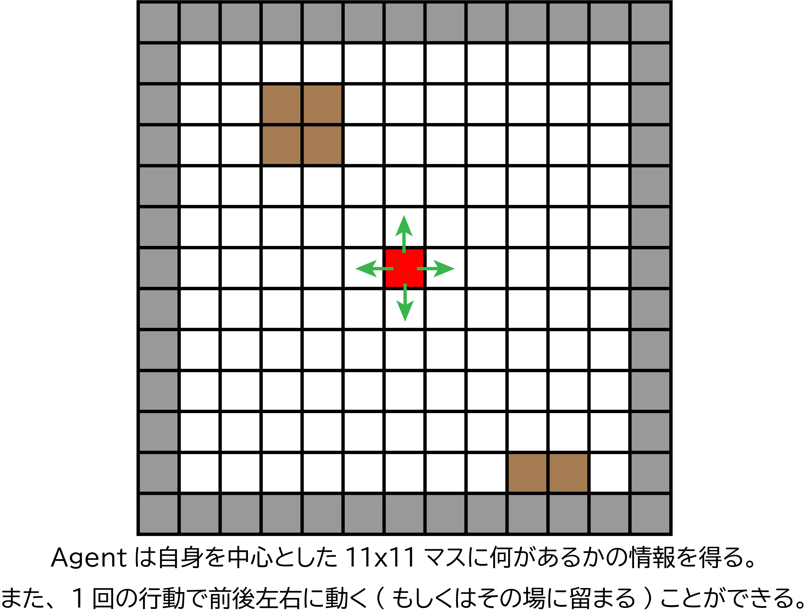

研究方法
学習環境の詳細
こちらは、ポスターでも紹介した、今回の学習環境の詳細です。
また、エージェントの観察と行動は以下のように行われます。

各オブジェクトの仕様
| オブジェクト名 | 仕様 |
|---|---|
| Field | AgentやExit、Obstacleが生成される。広さは縦20マス、横30マス。 |
| Agent | フィールドの白いマス(Empty)にランダムな位置で10体生成される。移動は5フレームごとに行われ、複数のエージェントが同じマスに移動することも可能。移動するごとに-0.001の罰が与えられる。 |
| Obstacle | 位置は固定。Agentはこのマスに移動することはできない。 |
| Exit | 位置は固定。Agentがこのマスに移動すると、そのAgentは避難完了となる。全てのAgentが避難完了すると1.0 の報酬が与えられ、次のエピソードが開始する。 |
プログラムフローチャート
強化学習サイクル1エピソード内のプログラムの簡単なフローチャートです。メインプログラムは左端の「EpisodeStart」から始まり、「EndEpisode」で終わります。
ただし、このプログラムのフローチャートは、3. 強化学習とは?で説明した「学習用のスクリプト」ではありません。エージェントがどのように環境観察を行うかや、報酬の与え方を記述したプログラムです。学習環境の中に含まれていると考えてください。